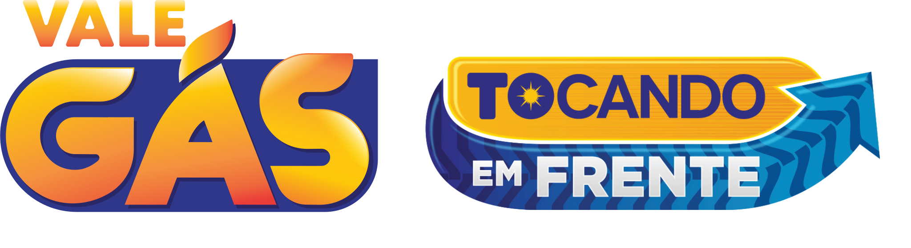

Verifique se você está entre os benefíciários
warning
O NIS informado está apto ao benefício.
Quem será contemplado?
Famílias tocantinenses em situação de maior vulnerabilidade social o núcleo familiar residente e domiciliado no Estado do Tocantins, inscrito no Cadastro Único para Programas Sociais (CadÚnico), administrado pelo Governo Federal, desde que não beneficiado pelo Bolsa Família e que possua renda per capita de até R$ 178,00 (cento e setenta e oito reais).
Os dados utilizados para os cálculos do programa devem ter sido atualizados até 30 de julho de 2021.
Quando posso retirar?
O beneficiário pode retirar um botijão, após emitir o cupom, até o último dia de cada mês.